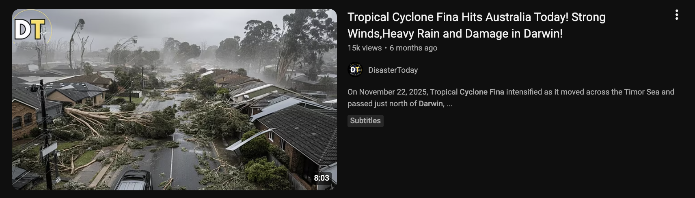

Start Here
In Session 2 we learned to spot the convincing message. This session is about what has changed in the last couple of years, because AI tools have moved the goalposts. Scams are cheaper to make, easier to personalise, and a lot more believable than they used to be. On top of that, there are new tricks: fake voices, fake video, and the quiet risk of leaking information into the very tools we are starting to use for work.
This is the safety side of our AI training. Where the AI series shows you how to get value from these tools, this session shows you the risks to watch for: both how scammers use AI against you, and how to avoid handing your information to the tools you use yourself. No technical background needed.
The tools changed. The defence did not. Slow down, check the source, and never act on a message, a voice, or a video on its own.
How AI Is Making Scams More Convincing
For years the advice was simple: watch for bad spelling and clumsy English. A scam email full of mistakes was easy to spot. That advice is now out of date. Scammers use the same AI writing tools everyone else does, so their messages are in perfect English, or perfect any language, every time.
What AI has changed for scammers:
The writing is flawless now
No more typos or odd phrasing to give it away. A scam email can read exactly like a real one from your bank, a supplier, or your manager.
Scams are personalised at scale
AI can take public information about you, your name, job, workplace, and posts, and write a message tailored to you, for thousands of people at once. It feels personal because, in a way, it is.
Fake voices and faces are cheap to make
A short clip of someone's voice from social media is enough to clone it. We come to this next.
"Bad English means scam" no longer holds. The reliable rule now is the one from Session 2: unexpected plus urgent means stop and check. Good writing proves nothing about who really sent a message.
Deepfakes: Fake Voices, Fake Video, Fake Calls
A deepfake is audio, video, or an image made or altered by AI to look and sound real. It might be a voice on the phone that sounds exactly like a family member, a video of a public figure saying something they never said, or a photo of an event that never happened.
Where you are most likely to meet one:
A phone call in a voice you know
The "family emergency" scam, made far more convincing. You get a call, and it is your son's or your daughter's voice, upset, saying they are in trouble and need money now. The voice can be cloned from a few seconds of audio taken from social media. The same trick is used at work, a call in the voice of your manager or CEO.
A video on social media
A clip of a politician, a celebrity, or a "doctor" promoting an investment or a miracle product, or saying something shocking. The face and voice look right, but the words are put in their mouth by AI.
The tells that still give them away
- The story is urgent and emotional, and it pushes you to act now. Same lever as every other scam.
- In video, look for odd edges, blurring around the face or hair, strange blinking, lips not quite matching the words, or a flat, robotic tone.
- The request is the giveaway, not the voice. A real loved one in trouble, or a real manager, will not refuse to verify who they are.
The simplest defence against a cloned voice is a question only the real person could answer, or a word your family agrees on in advance. If a panicked call asks for money, hang up and call the person back on the number you already have. At work, confirm any unusual request through a second channel, exactly as in Session 2. A real person is never harmed by you taking a minute to check.
Misinformation and What to Trust Online
Not everything fake is trying to steal from you. A lot of it is just trying to get your attention, your click, your share. AI has made it easy and cheap to produce dramatic images, videos, and headlines that are exaggerated, taken out of context, or simply made up. The danger is not only being fooled yourself; it is passing it on to others who trust you.
This matters most when feelings are running high, and there is no higher-feeling moment than right after a disaster.
A Real Example: After the Cyclone
When a cyclone affected the Top End, these two videos appeared in search results within hours, while people were still anxious and looking for information. Both use the real cyclone's name, dramatic imagery, and alarming claims to pull in views.

"Tropical Cyclone Fina Hits Australia Today! Strong Winds, Heavy Rain and Damage in Darwin!" The footage shows flattened gum trees and tiled-roof houses that look more like a southern suburb than tropical Darwin.

"Cyclone Fina Slams Darwin with Winds Up to 200 km/h, Rescue Mission Underway." A flooded high-rise beachfront that does not match Darwin's foreshore, posted by a United States channel.
Neither is a careful news report. They are built for clicks, and they are a textbook example of what to be wary of after any disaster.
Sensational, fear-loaded titles ("Slams", "Up to 200 km/h", "Rescue Mission Underway") designed to make you click during an emergency. A channel that does not match the place: "Wild WeatherUS" reporting on Darwin; content farms repackage every disaster worldwide for views. Pictures that do not match the place, streetscapes and beachfronts that look nothing like Darwin, or look too dramatic to be true, a sign of recycled footage from other events or AI-generated images. Vague, round numbers and no named, credible source. And the timing: they appear fast, while real information is still coming out, exactly when people are anxious and likely to share.
In the wake of a disaster we are primed to believe the worst. That is exactly when fake and exaggerated imagery spreads fastest, and exactly when to slow down.
How to check before you believe it, or share it
A quick truth check
Pause before you share. Strong feelings are the point. If something makes you scared or outraged, that is the moment to slow down, not to hit share.
Go to the source. For weather and emergencies in the Territory, that means the Bureau of Meteorology (bom.gov.au), the NT Government's emergency and SecureNT pages, and ABC Emergency, not a random YouTube channel or social media post.
Check the place and the date. Does the image really show here, and now? Dramatic disaster footage is very often from another country or another year, relabelled. Ask plainly: "does this even look like Darwin?"
Be extra careful right after an event. The first hours of any disaster are when misinformation is thickest. Wait for, and pass on, official advice only.
Staff are trusted, so what you share gets believed and passed on further. Sharing a fake or exaggerated image during an emergency can cause real panic, or send people the wrong way at the worst possible time. Sticking to official sources, and helping the people around you do the same, is part of keeping the community safe.
Keeping Council Information Out of AI Tools
AI chatbots are genuinely useful, and more of us are using them. But it is worth understanding where your words go when you type them in. With many free public tools, what you type can be stored, and may be used to help train the next version of the tool. In plain terms: it leaves your control.
That is fine for a recipe or a draft birthday speech. It is not fine for information about residents, staff, or Council business.
Free, paid, and enterprise accounts are not the same
Free public tools usually offer the least privacy. Paid personal accounts may offer more control. Enterprise or workplace accounts, set up by your organisation, are built so your data stays inside and is not used for training. The safe choice for work is whatever tool your workplace has approved, not a personal free account.
Do not paste personal or sensitive information (names with details, addresses, dates of birth, health or financial information), anything confidential about Council business, or any password, into a public AI tool. A simple test: if you would not put it on a public noticeboard, do not put it into a chatbot. For work, use only the tools your workplace has approved.
If an AI tool would genuinely help with a work task that involves real information, the answer is not to avoid AI; it is to use an approved tool, or to remove the identifying details first. If you are not sure, ask before you paste.
Protecting Your Own Identity
Deepfakes and impersonation need raw material: photos of your face, recordings of your voice, video of you. The more of that is publicly available, the easier you are to copy. You do not have to disappear from the internet; you just reduce what is freely on offer.
- Check the privacy settings on your social media so that photos and videos are not public to the whole world.
- Think before posting long clips of your own voice or your children's voices publicly.
- Be cautious with "fun" apps and quizzes that ask for photos, your voice, or personal details; that is raw material too.
- Agree a verification word or question with family, so a cloned voice cannot fool them, or you.
You cannot remove every trace, and you do not need to. Reducing what is public, and having a verification step agreed in advance, takes you from an easy target to a hard one. That is the whole game.
What to Take Away
Your up-to-date deception checklist. Click an item to tick it off.
- Stop trusting good spelling and grammar as a sign an email is real; AI writes perfectly now.
- Treat an unexpected, urgent phone call in a familiar voice as possibly fake; hang up and call back on a known number.
- Agree a verification word or question with my family, and use a second channel to check unusual requests at work.
- Pause before sharing anything dramatic online, especially right after a disaster.
- Check weather and emergency news at official sources (BOM, NT Government, ABC Emergency), not random channels.
- Never paste personal, sensitive, or confidential information, or passwords, into a public AI tool.
- Use only workplace-approved AI tools for any work that involves real information.
- Tighten my social media privacy so my face and voice are not public to everyone.
Knowledge Check
Five quick scenarios to see what has landed. Read each, decide what you would do, then click to reveal the answer. No score, no wrong answers; it is just a way to check your thinking.
01A dramatic video of a flooded street, said to be your town during the cyclone, is being shared fast in a community group. Do you share it on to warn people?Answer
No, not until you have checked it. Disaster footage is very often from another place or another year, or made or exaggerated by AI. Before sharing, check an official source (the Bureau of Meteorology, the NT Government emergency page, or ABC Emergency) and ask whether the image even matches your town. Sharing a fake during an emergency can cause real panic. If you want to help, pass on the official advice instead.
02You get a phone call. It is your daughter's voice, crying, saying she has had an accident and needs money sent right now. What do you do?Answer
Do not send anything. Hang up and call your daughter back on the number you already have for her. A voice can be cloned from a few seconds of audio online, and the panic is there to stop you thinking. If you cannot reach her, call someone who would know where she is. This is exactly why agreeing a verification word with family in advance is so useful; a cloned voice cannot answer it.
03A scam email arrives in perfect English, with the Council logo and writing that sounds just like your manager. Does the good English and familiar style mean it is safe?Answer
No. Good writing now proves nothing. Scammers use the same AI writing tools as everyone else, so flawless English and a convincing style are easy to produce, and logos are easy to copy. Rely on the checks from Session 2 instead: was it expected, is it urgent, does it ask for money, a payment change, a login, or secrecy? Verify through a second channel before acting.
04You want to use a free AI chatbot to help write a letter to a resident. It would be quicker to paste in the resident's name, address, and case notes. Is that okay?Answer
No. Do not paste a resident's personal information into a free public AI tool. What you type can be stored and used to train the tool, which means it leaves Council's control and may breach privacy rules. Either use a workplace-approved AI tool that keeps data inside, or write the letter with the identifying details removed and add them yourself afterwards. The simple test: if you would not put it on a public noticeboard, do not paste it into a chatbot.
05A video on social media shows a well-known doctor recommending an investment scheme. The face and voice look completely real. Should you trust it?Answer
Be very sceptical. This is a common deepfake scam. A real face and voice can be generated by AI, with the words put in their mouth. Look for the tells, odd edges or blurring, lips not quite matching, a flat tone, and remember the biggest one: a genuine expert is not selling you a get-rich scheme through a social media clip. Never act on a video like this; check the claim through a reputable, named source first.